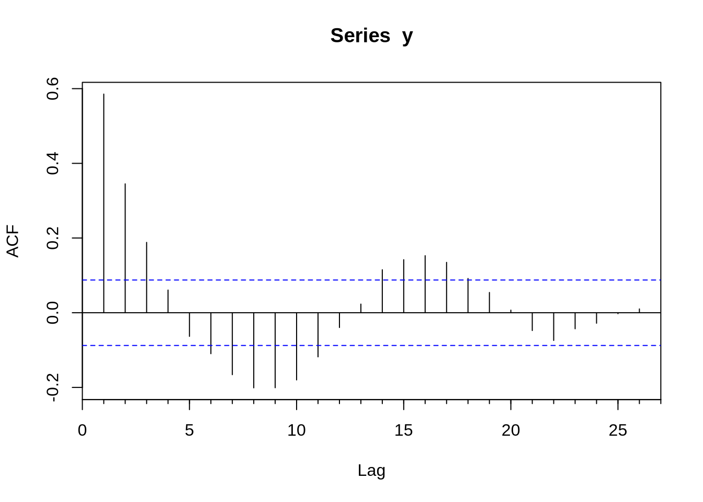
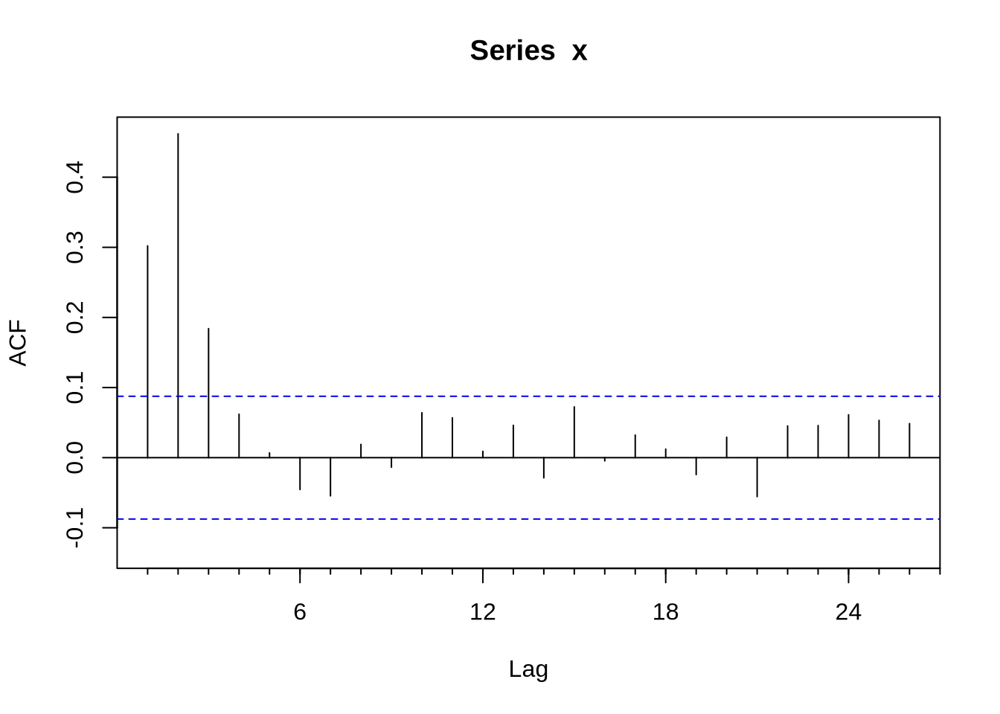
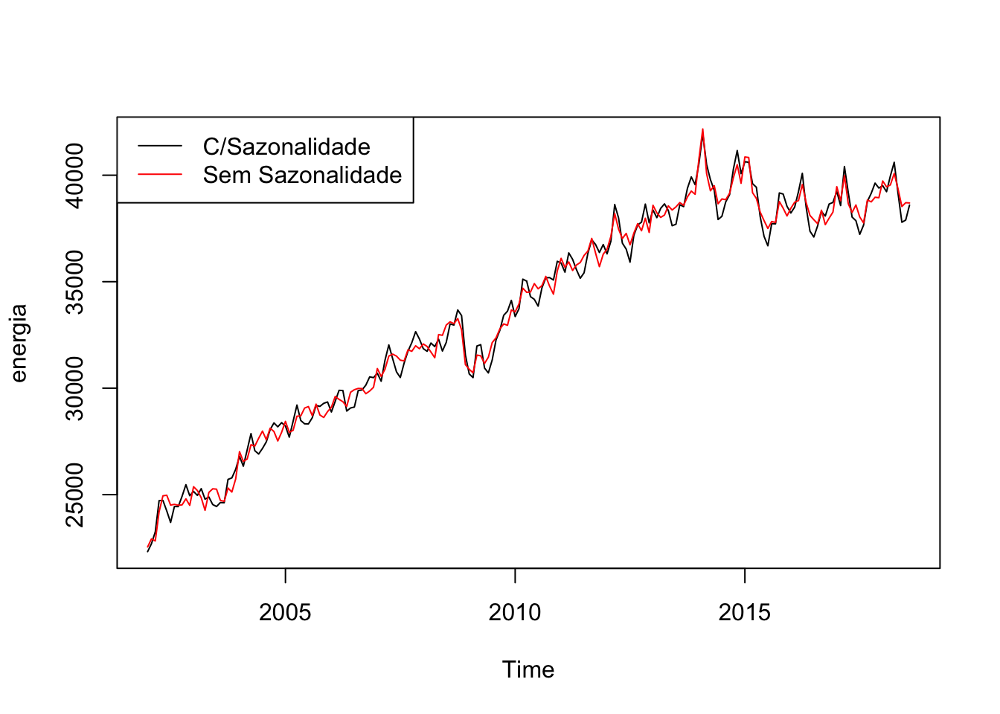
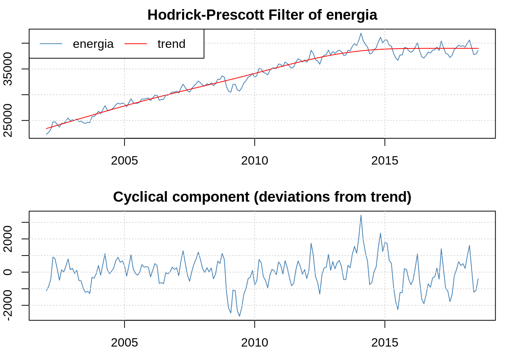

Capítulo 5 Séries Temporais
Métodos de séries temporais são suficientemente extensos e únicos para terem seu próprio capítulo. Este capítulo trata dos principais métodos de séries temporais de interesse dos economistas: ARIMAs, VARs, testes de raiz unitária e cointegração. Séries temporais são únicas o suficiente a ponto de terem um classe própria - sem nenhuma surpresa, ela se chama time series.
5.1 O básico
Suponha que você, usando os métodos do capítulo 2, inseriu uma série temporal no R. O R não sabe, a priori, que os dados são uma série temporal. Você precisa contar isso a ele, e o comando que faz isso é o ts(). O ts recebe a série, a data de ínicio e a frequência. A frequência é como você dividiu o ano: 4 se o dado for trimestral, 12 se for mensal…
Por exemplo, podemos gerar uma série de variáveis aleatórias da normal (um ruído branco) e transformar em série temporal mensal começando em janeiro de 2000:
serie <- rnorm(1000)
serie <- ts(serie,start =c(2000,01), freq = 12)Veja que o comando ts() é excessivamente engessado: os dados tem que ter uma frequência fixa, expressa como uma fração do ano. O pacote zoo extende bastante as capacidades do R em lidar com séries temporais, inclusive com séries irregulares.
Atenção: Séries Temporais e o lm Você não deve passar um objeto de série temporal para o lm(), já que o lm vai ignorar o formato de série temporal. Assim, estimar um modelo AR(1) usando lm(y ~ lag(y)) vai gerar uma regressão com coeficiente 1 para lag(y) e \(R^2 = 1\). De fato, a regressão feita foi y em y - o que não é uma regressão muito emocionante.
5.2 ARIMAs
Com uma série devidamente construída para ser um objeto ts - como nós fizemos acima- podemos tentar estimar algum modelo. O modelo base de séries temporais é o ARIMA. O R base já vem com muitas funções para lidar com isso, mas o pacote forecast extende bastante as capacidades do R em lidar com esse tipo de série. O primeiro passo para estimar um modelo Arima é obter a função de autocorrelação (FAC) e a função de autocorrelação parcial (FACP): elas são Acf e Pacf. Veja que existem versões na base do R que se chamam acf e pacf (notem que lá é com maiúscula e aqui com minúscula). A diferença fundamental entre os dois é que a Acf e a acf (e também a Pacf e a pacf) é que a primeira exclui a autocorrelação no momento 0 - que é trivialmente 1.
Uma vez conhecendo o formato da FAC e da FACP, podemos estimar o ARIMA. O comando para estimar um modelo ARIMA é Arima - e novamente, existe um arima com minúscula que é da base do R. O Arima basicamente recebe duas coisas, a série e a ordem do modelo(isso é, se o modelo é um ARMA(1,1), AR(1), MA(1) etc). Vamos gerar um exemplo de um AR(1) com dados simulados e obter a FAC e FACP e estimar o modelo Arma sugerido:
library(forecast)
u <- rnorm(500)
y <- rep(0,500) #nossa futura série
y[1] <- u[1]
for(i in 2:500){
y[i] <- 0.6*y[i-1] + u[i] #um AR(1) com coeficiente 0.6
}
Acf(y)
Pacf(y)
modelo <- Arima(serie,order=c(1,0,0))
summary(modelo)## Series: serie
## ARIMA(1,0,0) with non-zero mean
##
## Coefficients:
## ar1 mean
## -0.0312 -0.0157
## s.e. 0.0316 0.0315
##
## sigma^2 estimated as 1.06: log likelihood=-1447.14
## AIC=2900.28 AICc=2900.31 BIC=2915
##
## Training set error measures:
## ME RMSE MAE MPE MAPE MASE
## Training set 1.500235e-05 1.028603 0.8091188 98.585 111.1065 0.7103052
## ACF1
## Training set -0.0002764209Veja que o objeto modelo trás os coeficientes estimados, o erro padrão e alguns diagnósticos úteis como critérios de informação.
Em algumas situações pode ser muito difícil inferir o modelo certo a partir da FAC e da FACP. O comando auto.arima, do pacote forecast, seleciona um modelo a partir de algum critério de informação. Vamos ilustrar o ponto gerando uma série x que é um ARMA(1,2):
e <- rnorm(1000)
x <- rep(0,1000)
for(j in 1:998){
x[j+2] <- 0.5*x[j+1] + e[j+2] - 0.3*e[j+1] + 0.4*e[j]
}
x <- x[500:1000]
x <- ts(x, start = c(1999,05), freq = 12)
Acf(x)
Pacf(x)
auto.arima(x,ic = "bic")## Series: x
## ARIMA(1,0,2)(1,0,0)[12] with zero mean
##
## Coefficients:
## ar1 ma1 ma2 sar1
## 0.4648 -0.2850 0.4401 -0.0243
## s.e. 0.0766 0.0738 0.0418 0.0455
##
## sigma^2 estimated as 0.8746: log likelihood=-675.65
## AIC=1361.29 AICc=1361.41 BIC=1382.37Nesse caso o auto.arima acertou, mas nem sempre isso ocorre.
5.3 VARs
Um VAR, teoricamente, é apenas uma generalização do AR. Ainda assim, do ponto de vista computacional, eles são distintos, e o VAR tem seu próprio conjunto de pacotes no R. O mais importante deles é o vars.
Começamos juntando todas as séries que queremos estimar o VAR em uma matriz (use o cbind() para isso). O passo seguinte é escolher a ordem do VAR - geralmente usando algum critério de informação. O comando VARselect faz isso e apresenta alguns critérios de informação e a quantidade de lags que minimizam cada um.
O comando que faz a estimativa per se é o VAR. Ele recebe a matriz com as séries e quantos lags você quer que sejam usados - ou o critério de informação a ser usado na hora de fazer a estimativa.
Por último, queremos recuperar a resposta dinâmica de cada uma das variáveis a um choque (não só um choque na própria variável, como o efeito cruzado de um choque em outra variável).
Vamos gerar um VAR(1) com duas variáveis apenas para ilustrar o uso do pacote:
library(vars)## Loading required package: MASS## Loading required package: strucchange## Loading required package: zoo##
## Attaching package: 'zoo'## The following objects are masked from 'package:base':
##
## as.Date, as.Date.numeric## Loading required package: sandwich## Loading required package: urca## Loading required package: lmtestT <- 500 #número de períodos
N <- 2 #número de variáveis
u <- matrix(rnorm(T*N),nrow = N,ncol = T)
x <- matrix(0,nrow = N, ncol = T)
A <- rbind(c(0.3,-0.2),c(0.6,0.2))
for(j in 2:T){
x[,j] <- A%*%x[,j-1] + u[,j]
}
x <- x[,400:500]
x <- t(x)
colnames(x) <- c("x","y")
VARselect(x) ## $selection
## AIC(n) HQ(n) SC(n) FPE(n)
## 1 1 1 1
##
## $criteria
## 1 2 3 4 5 6
## AIC(n) 0.5073838 0.5664775 0.6364448 0.7148971 0.8004834 0.804686
## HQ(n) 0.5741733 0.6777934 0.7922872 0.9152658 1.0453785 1.094108
## SC(n) 0.6729349 0.8423961 1.0227309 1.2115506 1.4075043 1.522074
## FPE(n) 1.6610195 1.7624397 1.8909018 2.0466301 2.2319134 2.244812
## 7 8 9 10
## AIC(n) 0.8853781 0.9301667 0.9188877 0.9939262
## HQ(n) 1.2193260 1.3086411 1.3418885 1.4614533
## SC(n) 1.7131339 1.8682901 1.9673785 2.1527844
## FPE(n) 2.4386605 2.5575410 2.5379366 2.7479537modelo <- VAR(x,p = 1)
plot(irf(modelo, impulse = "x", response = c("x","y")))
Eu só pedi o plot do choque da primeira variável sobre as duas variáveis por que isso é uma ilustração. Fazer plot(irf(modelo)) em uma seção do R, ele vai plotar os choques de todas as variáveis sobre todas as variáveis.
5.4 Raiz unitária
O pacote urca nos trás testes de raiz unitária. O teste Dickey-Fuller, um dos mais populares, é chamado pelo ur.df(). Vamos gerar um passeio aleatório para mostrar:
x <- cumsum(rnorm(1000))
summary(ur.df(x))##
## ###############################################
## # Augmented Dickey-Fuller Test Unit Root Test #
## ###############################################
##
## Test regression none
##
##
## Call:
## lm(formula = z.diff ~ z.lag.1 - 1 + z.diff.lag)
##
## Residuals:
## Min 1Q Median 3Q Max
## -3.0769 -0.7404 -0.0143 0.6389 3.4537
##
## Coefficients:
## Estimate Std. Error t value Pr(>|t|)
## z.lag.1 -2.254e-05 7.896e-04 -0.029 0.977
## z.diff.lag -1.212e-02 3.169e-02 -0.383 0.702
##
## Residual standard error: 1.001 on 996 degrees of freedom
## Multiple R-squared: 0.0001483, Adjusted R-squared: -0.001859
## F-statistic: 0.07388 on 2 and 996 DF, p-value: 0.9288
##
##
## Value of test-statistic is: -0.0285
##
## Critical values for test statistics:
## 1pct 5pct 10pct
## tau1 -2.58 -1.95 -1.62Veja que o valor crítico para o teste Dick Fuller não é o valor usual da estatística t, mas sim o valor exibido na parte debaixo da tabela do sumário do teste. Nesse caso, a qualquer nível de significância, nós não rejeitamos a hipótese de raiz unitária. Vamos testar para um caso estacionário:
u <- rnorm(2000)
y <- rep(0,2000)
for(i in 2:2000){
y[i] <- 0.5*y[i-1] + u[i]
}
y <- y[1000:2000]
summary(ur.df(y))##
## ###############################################
## # Augmented Dickey-Fuller Test Unit Root Test #
## ###############################################
##
## Test regression none
##
##
## Call:
## lm(formula = z.diff ~ z.lag.1 - 1 + z.diff.lag)
##
## Residuals:
## Min 1Q Median 3Q Max
## -3.7812 -0.6434 0.0092 0.6571 3.2324
##
## Coefficients:
## Estimate Std. Error t value Pr(>|t|)
## z.lag.1 -0.501212 0.031742 -15.790 <2e-16 ***
## z.diff.lag -0.002658 0.031612 -0.084 0.933
## ---
## Signif. codes: 0 '***' 0.001 '**' 0.01 '*' 0.05 '.' 0.1 ' ' 1
##
## Residual standard error: 0.9926 on 997 degrees of freedom
## Multiple R-squared: 0.2511, Adjusted R-squared: 0.2496
## F-statistic: 167.1 on 2 and 997 DF, p-value: < 2.2e-16
##
##
## Value of test-statistic is: -15.7901
##
## Critical values for test statistics:
## 1pct 5pct 10pct
## tau1 -2.58 -1.95 -1.625.5 Desassonalizando
Dados de séries temporais, não raramente, apresentam sazonalidade. Por exemplo, gasto de energia elétrica tende a ser maior nos meses de dezembro a fevereiro, devido ao verão. Retirar sazonalidade é importante em muitas análises.
Um método padrão é colocar dummies para as unidades de tempo (uma para cada mês se o dado for mensal, uma para cada trimestre se for trimestral etc) e usar o resíduo dessa regressão somado a média da série (já que o resíduo tem média zero, por construção). Criar as dummies “no braço” pode ser tedioso, mas felizmente o pacote forecast trás o comando seasonaldummy() que cria as dummies automaticamente para a série.
energia <- BETSget(1406, from = "2002-01-01")
dum <- seasonaldummy(energia)
mod <- Arima(energia, xreg = dum)
des <- resid(mod) + mean(energia)
plot(energia)
lines(des, col = 2)
legend("topleft", legend = c("C/Sazonalidade", "Sem Sazonalidade"), lty = c(1,1), col = c(1,2))
Outra maneira comum de dessazonalizar é usando o X13, um programa do governo americano. O X13 pode ser acessado direto do R usando o pacote seasonal. O comando que acessa o X13 é o seas. O X13 são, na verdade, dois programas: um que é o X13 e o outro que é o SEATS. Ambos tem a mesma função: dessazonalizar. O X13 vem com todo tipo de método automático para detectar outliers, fazer transformações nas séries e uma infinidade de outras coisas. Nesse caso, nós vamos desligar todas essa opções:
library(seasonal)
modelo2 <- seas(energia, transform.function = "none", regression.aictest = NULL, outlier = NULL)O comando final obtém a série dessazonalizada:
plot(energia)
lines(final(modelo2), col = 2)
legend("topleft", legend = c("C/Sazonalidade", "Sem Sazonalidade"), lty = c(1,1), col = c(1,2))
5.6 Filtro Hodrick-Prescott
O filtro Hodrick-Prescott (HP) é utilizado em séries não estacionárias quando queremos separar a tendência do componente ciclíco. Ele é polêmico, mas ainda é amplamente usado. No R, o pacote mFilter implementa ele e alguns outros. Vamos aplicar na série de energia:
library(mFilter)
filtrado <- mFilter(energia, "HP")
plot(filtrado)
Eu posso acessar a tendência e o componente cíclico usando o filtrado$trend e filtrado$cycle, no exemplo acima - que seria particularmente útil se eu quisesse utilizar os dados de cíclo para alguma estimação.